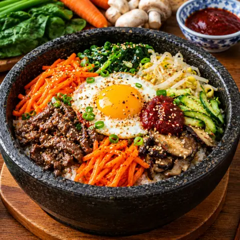

🥗 ビビンバ
味付けしたナムル、牛肉、卵をのせたご飯を、甘辛いコチュジャンだれで混ぜて。
材料
- ご飯3 カップ
- 牛肉230 g
- 醤油1.5 大さじ
- 砂糖4 小さじ
- ごま油3 大さじ
- みりん2 小さじ
- にんにく4 かけ
- ねぎ3 本
- もやし230 g
- ほうれん草230 g
- きゅうり2
- きのこ115 g
- にんじん2
- 卵4
- コチュジャン4 大さじ
- ごま2 小さじ
- 塩適量
作り方
- いつもより少し少なめの水でご飯をやや固めに炊く。
- 牛肉を細切りにし、醤油、砂糖小さじ2、ごま油小さじ2、みりん、にんにく小さじ1、刻みねぎ大さじ1、こしょうで20分漬け、強火で2〜3分炒める。
- もやしは1分、ほうれん草は約40秒ゆでる。水にとって固く絞り、それぞれにんにく、ごま油、ごま、塩少々であえる。
- きゅうりを薄切りにして塩で10〜15分おき、水けを絞ってほかのナムルと同様にあえる。
- 薄切りきのことにんじんのせん切りを、それぞれ塩ひとつまみで1〜2分ずつ別々に炒める。卵は目玉焼きにする。
- たれ：コチュジャン、砂糖小さじ2、ごま油大さじ1、水大さじ1を混ぜる。
- ご飯の上にナムルと牛肉を並べ、卵、ごま油少々、たれをのせる。食べる前によく混ぜる。